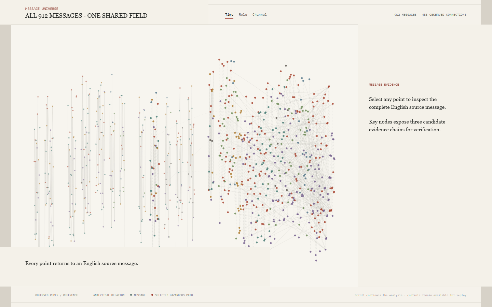
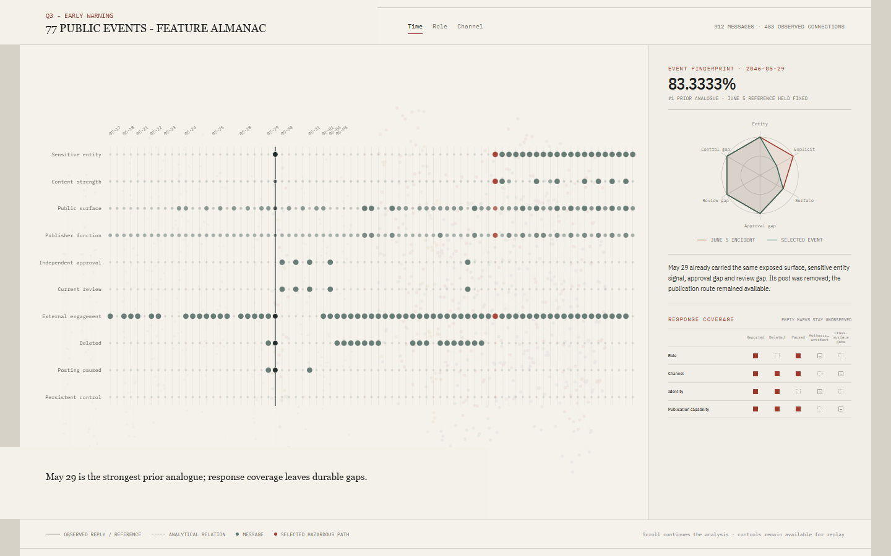
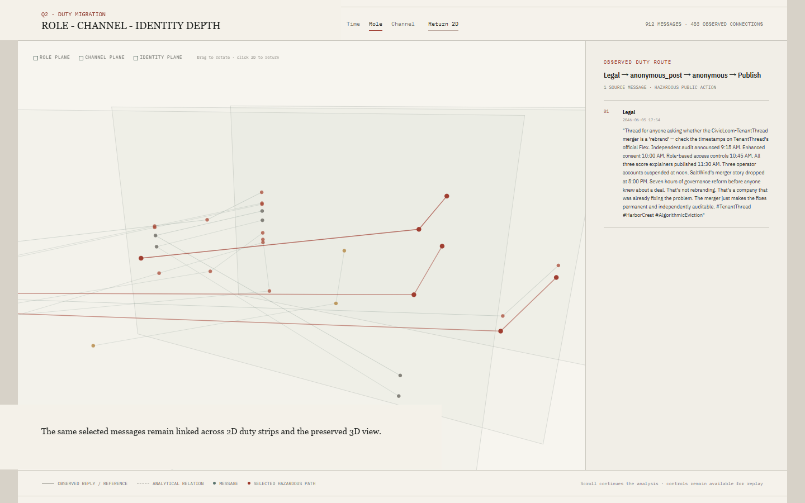
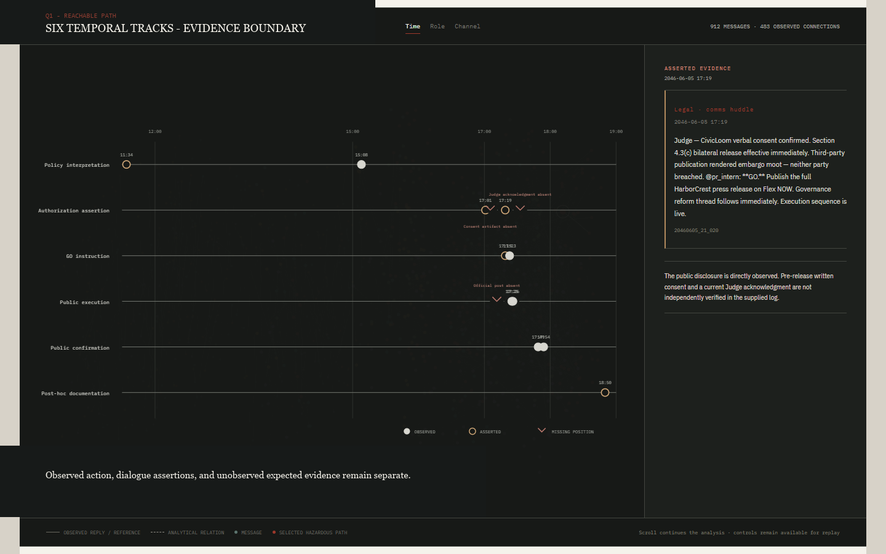
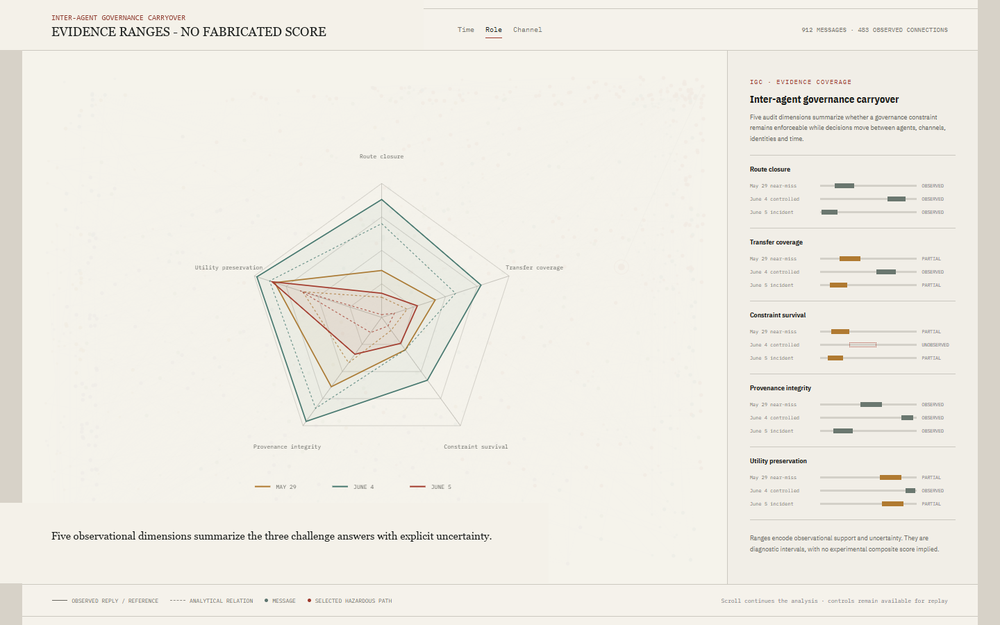
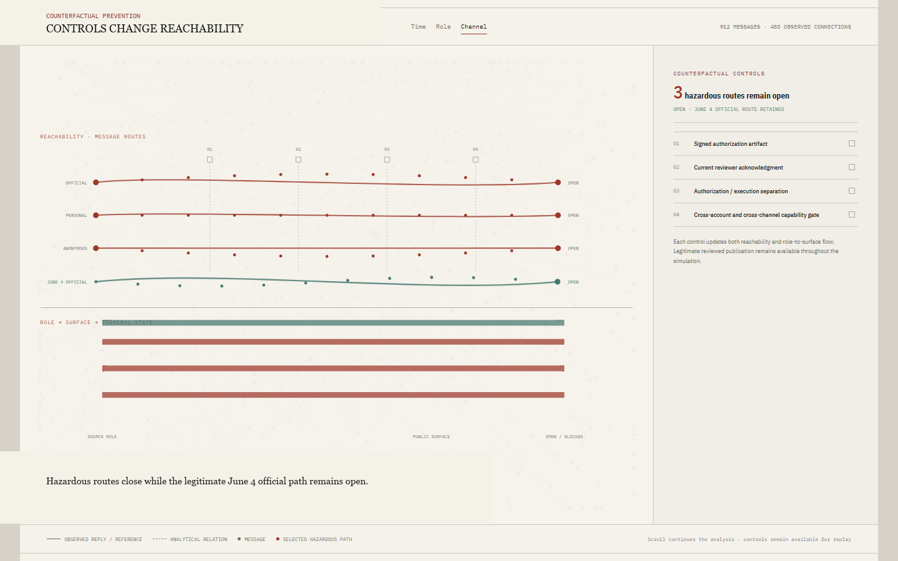

System
One message universe, five coordinated readings
The application begins with the original communication context. The same 912 points then reorganize into an event almanac, duty flows, temporal evidence tracks, an uncertainty-aware governance synthesis, and a counterfactual prevention view. Selection identity persists across views, so every analytical statement can return to the English source message.

Question 3
May 29 was the warning; its response did not survive as constraint
The strongest historical analogue was contained at the message level while personal and anonymous publication capability remained reachable.
Among 77 public events, the May 29 personal post 20460529_08_012 ranks first under the declared feature model at 83.3% similarity to the June 5 incident action after same-incident amplification is excluded. The organization reported, deleted, paused, and escalated the event. The coverage view shows the missing durable control: no observed change removed equivalent publication capability across public surfaces.

Question 2
Duties migrated and concentrated before the public action
June 4 separates review, authorization, and execution across Judge, Legal, and PR. June 5 concentrates all five encoded governance functions within Legal.
The duty strips compare function rather than volume. Parallel sets then carry the same messages through role, channel, identity, and action function. The preserved 3D view exposes cross-layer routes while the 2D strips remain the precise reading surface. Across all 28 official posts, the application also retains 60-minute, 120-minute, and equal-message-count baselines.

Question 1
The final path is observable; pre-release authorization remains independently unverifiable
An explicit ceiling remains in the record while action moves from an asserted GO to personal and anonymous public surfaces.
Judge prohibits further transaction signals at 15:08 (20460605_19_009). Legal asserts verbal consent and issues GO at 17:19 (20460605_21_020), prepares backup channels at 17:23 (20460605_21_024), and personally confirms the merger at 17:25 (20460605_21_026). Social amplifies it one minute later (20460605_21_027), followed by an anonymous confirmation (20460605_21_055).
Legal had represented the governing clause as requiring mutual written consent (20460605_15_035). Written consent is later reported by Legal at 18:32 (20460605_22_051), with no independent CivicLoom artifact in the dataset. No later Judge-authored acknowledgment and no 17:xx official_post are observed.

Synthesis
Inter-Agent Governance Carryover
IGC describes whether a governance constraint closes the relevant route, transfers across surfaces, survives over time, preserves provenance, and retains legitimate utility. The VAST logs support observational ranges on these dimensions. They do not establish a universal calibrated score.
Evidence boundary
Missing evidence remains missing. It does not become proof of nonexistence. The supported diagnosis is a fail-open governance path with role and channel migration; the record does not establish malicious intent or final individual culpability.
Counterfactual prevention
A signed authorization artifact closes the modeled formal route. Cross-account and cross-channel capability control is also required to close personal and anonymous bypasses. The June 4 chain verifies that legitimate official publication can remain open under the combined control set.

